Package overview
CohortCharacteristics contains functions for summarising characteristics of cohorts of patients identified in an OMOP CDM dataset. Once a cohort table has been created, CohortCharacteristics provides a number of functions to help provide a summary of the characteristics of the individuals within the cohort.
#> To cite package 'CohortCharacteristics' in publications use:
#>
#> Catala M, Guo Y, Lopez-Guell K, Burn E, Mercade-Besora N, Alcalde M
#> (????). _CohortCharacteristics: Summarise and Visualise
#> Characteristics of Patients in the OMOP CDM_. R package version
#> 0.3.0, <https://darwin-eu-dev.github.io/CohortCharacteristics/>.
#>
#> A BibTeX entry for LaTeX users is
#>
#> @Manual{,
#> title = {CohortCharacteristics: Summarise and Visualise Characteristics of Patients in the OMOP CDM},
#> author = {Marti Catala and Yuchen Guo and Kim Lopez-Guell and Edward Burn and Nuria Mercade-Besora and Marta Alcalde},
#> note = {R package version 0.3.0},
#> url = {https://darwin-eu-dev.github.io/CohortCharacteristics/},
#> }Package installation
You can install the latest version of CohortCharacteristics from CRAN:
install.packages("CohortCharacteristics")Or install the development version from github:
install.packages("pak")
pak::pkg_install("darwin-eu-dev/CohortCharacteristics")Content
The package contain three types of functions:
-
summarise* type functions. These functions produce
standard output. See omopgenerics for more information on this standardised output format. These functions are the ones that do the work in terms of extracting the necessary data from the cdm and summarising it. - table* type functions. These functions work with the output of the summarise ones. They will produce a table visualisation created using the visOmopresults package.
- plot* type functions. These functions work with the output of the summarise ones. They will produce a plot visualisation created using the visOmopresults package.
Examples
Mock data
Althought the package provides some simple mock data for testing (mockCohortCharacteristics()), for these examples we will use the GiBleed dataset that can be downloaded using the CDMConnector package that will give us some more real results.
library(CDMConnector)
library(duckdb)
library(dplyr, warn.conflicts = FALSE)
folder <- tempdir()
Sys.setenv("EUNOMIA_DATA_FOLDER" = folder)
downloadEunomiaData(overwrite = TRUE)
#>
#> Download completed!
con <- dbConnect(duckdb(), eunomiaDir())
cdm <- cdmFromCon(con = con, cdmSchema = "main", writeSchema = "main")Let’s create a simple cohort:
library(DrugUtilisation)
cdm <- generateIngredientCohortSet(cdm = cdm, name = "my_cohort", ingredient = c("warfarin", "acetaminophen"))Cohort counts
We can get counts using the function summariseCohortCount():
result <- summariseCohortCount(cdm$my_cohort)
result |>
glimpse()
#> Rows: 4
#> Columns: 13
#> $ result_id <int> 1, 1, 1, 1
#> $ cdm_name <chr> "Synthea synthetic health database", "Synthea synthet…
#> $ group_name <chr> "cohort_name", "cohort_name", "cohort_name", "cohort_…
#> $ group_level <chr> "11289_warfarin", "11289_warfarin", "161_acetaminophe…
#> $ strata_name <chr> "overall", "overall", "overall", "overall"
#> $ strata_level <chr> "overall", "overall", "overall", "overall"
#> $ variable_name <chr> "Number records", "Number subjects", "Number records"…
#> $ variable_level <chr> NA, NA, NA, NA
#> $ estimate_name <chr> "count", "count", "count", "count"
#> $ estimate_type <chr> "integer", "integer", "integer", "integer"
#> $ estimate_value <chr> "137", "2679", "13907", "137"
#> $ additional_name <chr> "overall", "overall", "overall", "overall"
#> $ additional_level <chr> "overall", "overall", "overall", "overall"You can easily create a table using the associated table function, tableCohortCount():
tableCohortCount(result, type = "flextable")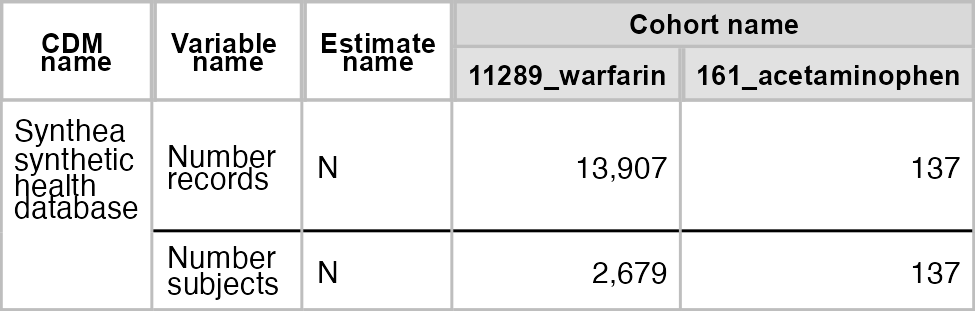
We could create a simple plot with plotCohortCount():
result |>
filter(variable_name == "Number subjects") |>
plotCohortCount(x = "cohort_name", colour = "cohort_name")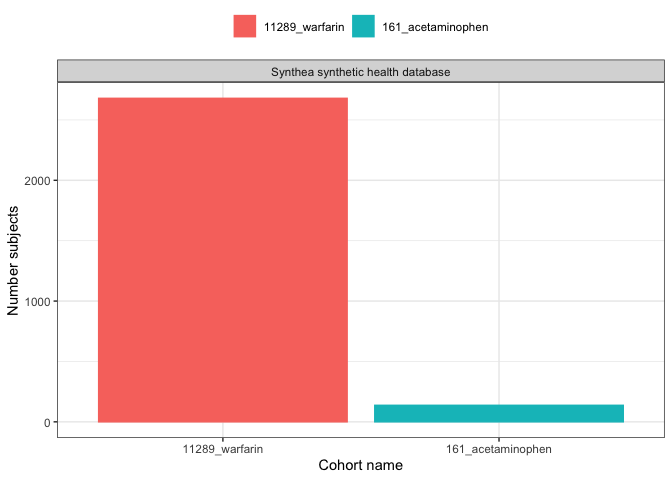
All the other function work using the same dynamic, first summarise, then plot/table.
Cohort attrition
result <- summariseCohortAttrition(cdm$my_cohort)
tableCohortAttrition(result, type = "flextable")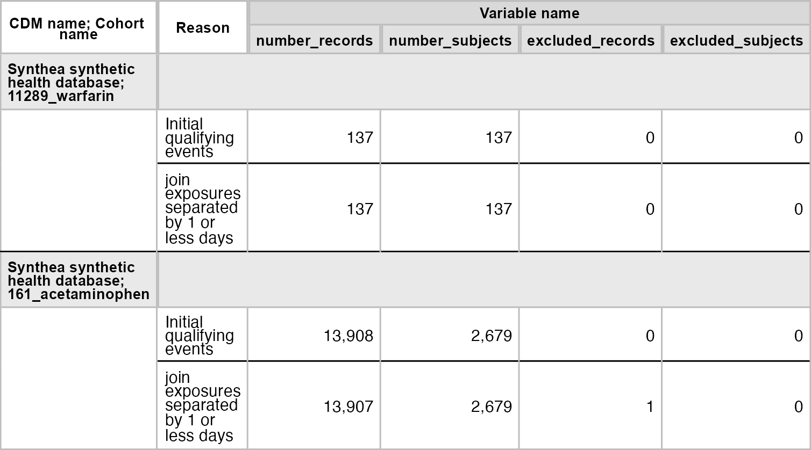
result |>
filter(group_level == "161_acetaminophen") |>
plotCohortAttrition()Characteristics
result <- summariseCharacteristics(cdm$my_cohort)
tableCharacteristics(result, type = "flextable")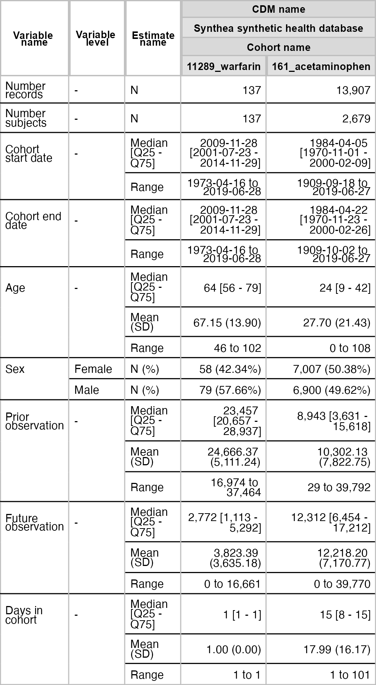
result |>
filter(variable_name == "Age") |>
plotCharacteristics(plotStyle = "boxplot", colour = "cohort_name")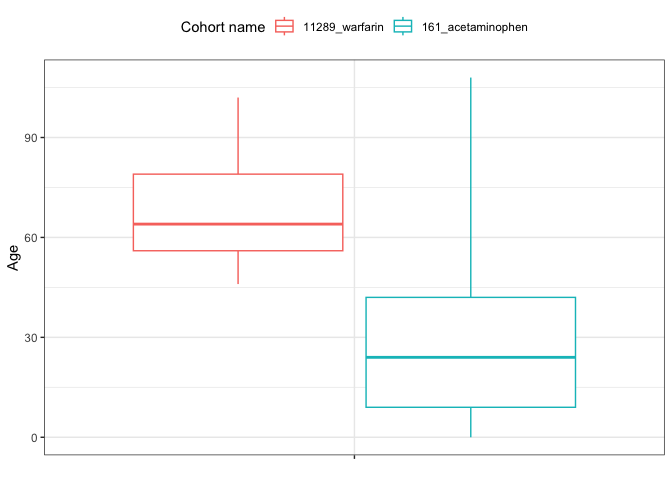
Timing between cohorts
result <- summariseCohortTiming(cdm$my_cohort)
tableCohortTiming(result, header = "cdm_name", type = "flextable")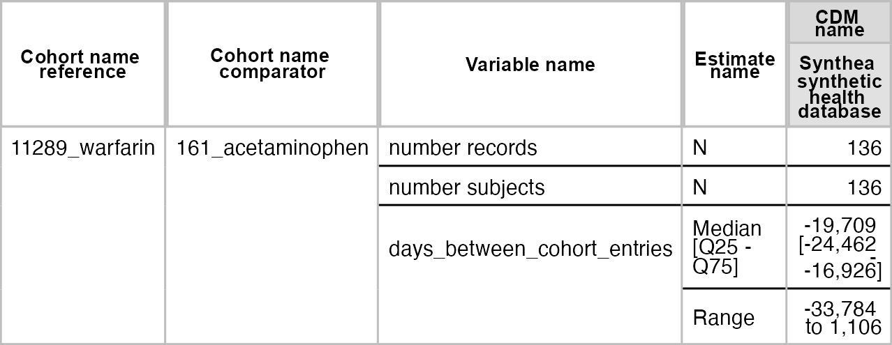
plotCohortTiming(
result,
uniqueCombinations = TRUE,
facet = "cdm_name",
colour = c("cohort_name_reference", "cohort_name_comparator"),
timeScale = "years"
)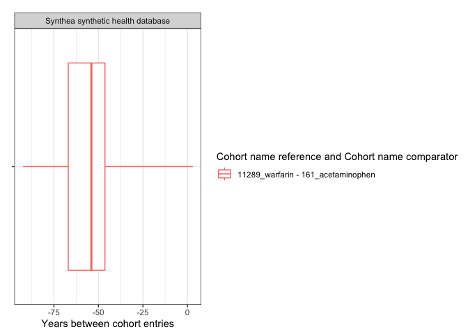
plotCohortTiming(
result,
plotType = "density",
uniqueCombinations = FALSE,
facet = "cdm_name",
colour = c("cohort_name_comparator"),
timeScale = "years"
)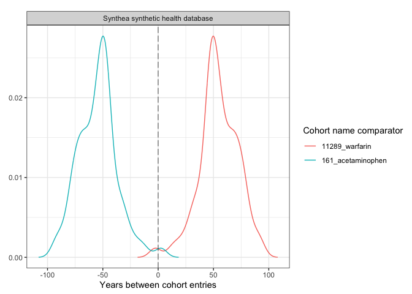
Overlap between cohort
result <- summariseCohortOverlap(cdm$my_cohort)
tableCohortOverlap(result, type = "flextable")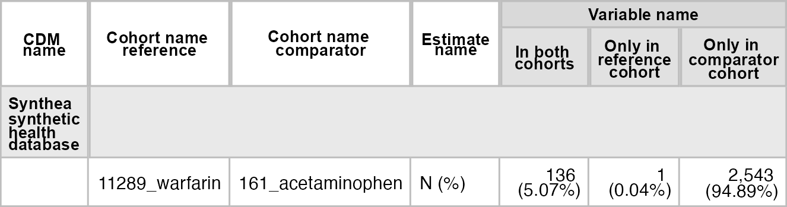
plotCohortOverlap(result, uniqueCombinations = TRUE)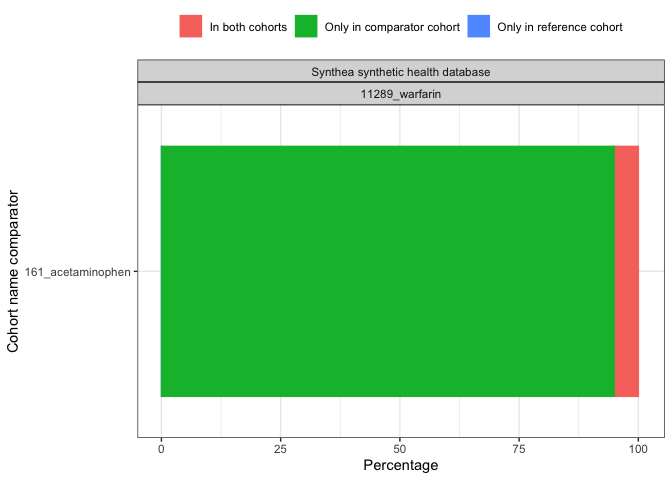
Large scale characteristics
result <- cdm$my_cohort |>
summariseLargeScaleCharacteristics(
window = list(c(-90, -1), c(0, 0), c(1, 90)),
eventInWindow = "condition_occurrence"
)
tableLargeScaleCharacteristics(result, type = "flextable")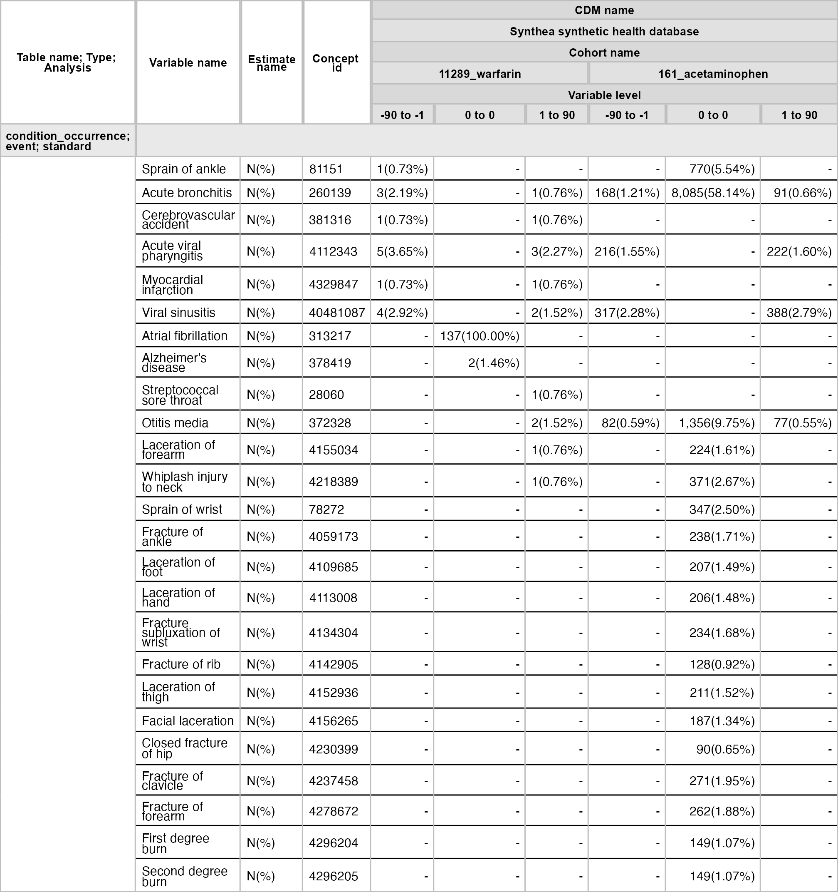
result |>
filter(group_level == "161_acetaminophen") |>
plotLargeScaleCharacteristics()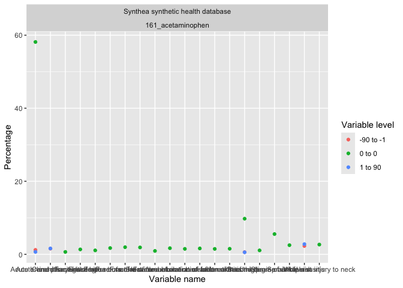
result |>
filter(group_level == "161_acetaminophen", variable_level != "0 to 0") |>
plotComparedLargeScaleCharacteristics(
reference = c(variable_level = "-90 to -1"), colour = "variable_name"
)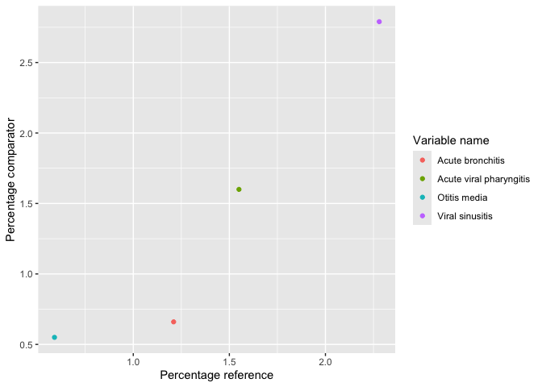
Disconnect
Disconnect from your database using CDMConnector::cdmDisconnect() to close the connection or with mockDisconnect() to close connection and delete the created mock data:
mockDisconnect(cdm)Recomendations
Although it is technically possible, we do not recommend to pipe table or plot functions with the summarise ones. The main reason is that summarise functions take some time to run, a large scale characterisation in a big cdm object can take a few hours. If we pipe the output to a table/plot function we loose the summarise result object. In fact, some times we would send code around to be ran in others database and what we want to export is the summarised_result objects and not the table or plot which we would like to build after compiling results from different cdm objects.
Not recommended:
cdm$my_cohort |>
summariseCharacteristics() |>
tableCharacteristics()Recommended:
x <- summariseCharacteristics(cdm$my_cohort)
tableCharacteristics(x)